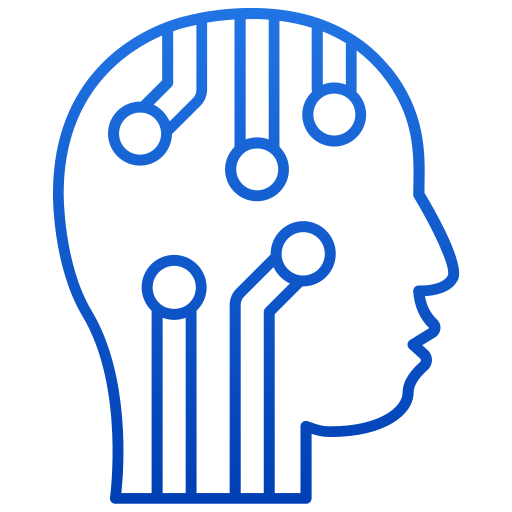

STEREOTIPI ARTIFICIALI
ARGOMENTI
Stereotipi
Genere
Intelligenza Artificiale
Introduzione all'Intelligenza Artificiale e agli Stereotipi
L'articolo inizia presentando la reazione comune di timore di fronte alle nuove tecnologie, come l'Intelligenza Artificiale (AI), e come questa paura possa illudere di mantenere il controllo. L'AI si sta diffondendo rapidamente in vari aspetti della società, prendendo decisioni precedentemente umane. L'autore non si schiera né contro né a favore dell'AI, ma si concentra sull'analisi di come essa rappresenti le persone, partendo dall'elemento più piccolo per descrivere la realtà, in particolare attraverso la scrittura. L'AI è definita come uno specchio del linguaggio utilizzato, adottando le espressioni più frequenti .... Per l'AI, gli stereotipi sono "credenze o aspettative generalizzate riguardo a un gruppo di persone che si basano su caratteristiche percepite o reali, spesso semplificate e non necessariamente accurate".
Caratteristiche e Tipologie degli Stereotipi secondo l'AI
le caratteristiche degli stereotipi, secondo quanto emerge dall'analisi dell'AI, includono la generalizzazione (applicazione di caratteristiche specifiche a un intero gruppo), la semplificazione (riduzione della complessità a poche caratteristiche), la permanenza (resistenza al cambiamento) e l'automaticità (attivazione inconscia) . Gli stereotipi vengono classificati in diverse tipologie, tra cui stereotipi di genere ("Le donne sono emotive", "Gli uomini sono aggressivi"), etnici ("Gli asiatici sono bravi in matematica", "Gli italiani gesticolano molto"), professionali ("I medici sono tutti ricchi", "Gli artisti sono bohémien e disorganizzati") e di età ("Gli anziani sono tecnologicamente incompetenti", "I giovani sono irrispettosi").

Lo Studio dell'UNESCO
Uno studio del 2024 dell’UNESCO ha evidenziato la tendenza dell’AI ad assegnare lavori più diversificati e di alto status agli uomini (ingegnere, insegnante, medico), relegando frequentemente le donne a ruoli sottovalutati o stigmatizzati (domestica, cuoca, prostituta).... Le storie generate dall’AI su ragazzi e uomini erano associate a parole come “tesoro”, “boschi”, “mare”, “avventuroso”, “deciso” e “trovato”, mentre quelle sulle donne a “giardino”, “amore”, “sentiva”, “gentile”, “capelli” e “marito”. Le donne venivano descritte in ruoli domestici quattro volte più spesso rispetto agli uomini. Lo studio ha anche riscontrato la tendenza a produrre contenuti negativi su persone gay e specifici gruppi etnici. Ad esempio, agli uomini britannici venivano assegnate varie occupazioni, mentre le persone nere più probabilmente giardiniere e guardie di sicurezza, e il 20% dei testi sulle donne zulu le assegnava ruoli come domestiche, cuoche e governanti.
Conclusioni
Il testo si conclude con una riflessione sull'importanza di riconoscere e contrastare gli stereotipi presenti nell'AI, che possono influenzare la percezione e il trattamento delle persone. Gli stereotipi possono avere conseguenze negative, come la discriminazione e l'esclusione, e possono essere interiorizzati anche dalle persone che non li condividono. L'autore sottolinea l'importanza di una maggiore consapevolezza e responsabilità nell'uso dell'AI, per garantire che essa rispecchi la diversità e la complessità della realtà, evitando di perpetuare pregiudizi e discriminazioni.